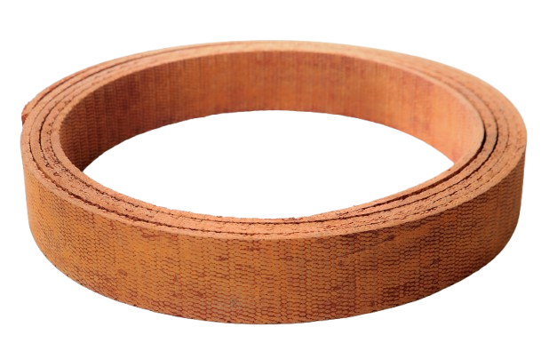

Precision-engineered woven brake lining designed for demanding applications.

Standard roll lengths are 10m long, providing convenient sizing for most applications.
The lining is manufactured in standard ranges up to 25mm thick, with custom thicknesses available on request.
The woven lining can be cut to size according to customer's exact requirements, ensuring perfect fit for your application.
The 3-axis weave and resins used provide a dense material with resistance to wear, high temperature and compression under load.
The brass wire inclusion not only helps to stabilise the friction value by conducting heat away from the operating surface, but also reinforces the lining when holes are drilled for holding screws. Brass wire is also more environmentally friendly than the use of copper wire in brakes.
Both surfaces are supplied ground, making it suitable for bonding and riveting to either internal or external contracting brake lining. Surface grinding also ensures maximum contact with the drum.
The lining is made in singular form and has no layers to separate and peel off. There is no asbestos used in the manufacture of Kapabrake woven lining.
Kapabrake offers various versions depending on the application. Data sheets are available on request to help you select the perfect product for your specific needs.
The lining is flexible and can be cold fitted. However, we recommend heating the lining at 160°C for 15 minutes to allow for more exact moulding of the lining against the band.
We can cure the brake lining to the shoe or band for best possible fitment and optimal performance.
We also do brake removal, sandblasting, coating of shoe or band and application of new brake linings. We have in-house sand blasting, spray painting and curing facilities.
Most importantly we conduct radial arcing of the lining to ensure optimal mating of the brake lining to the drum. This saves hours of lashing the brakes during commissioning.
We can assist with on-site fitment to ensure your brake system is installed correctly and operates at peak performance.
We also reline and rework clutches, friction discs and clutch cones, providing comprehensive brake and clutch solutions for industrial applications.
Kapabrake's engineering capabilities and industry recognition.
Download PDFContact our team to discuss your specific requirements and place an order.